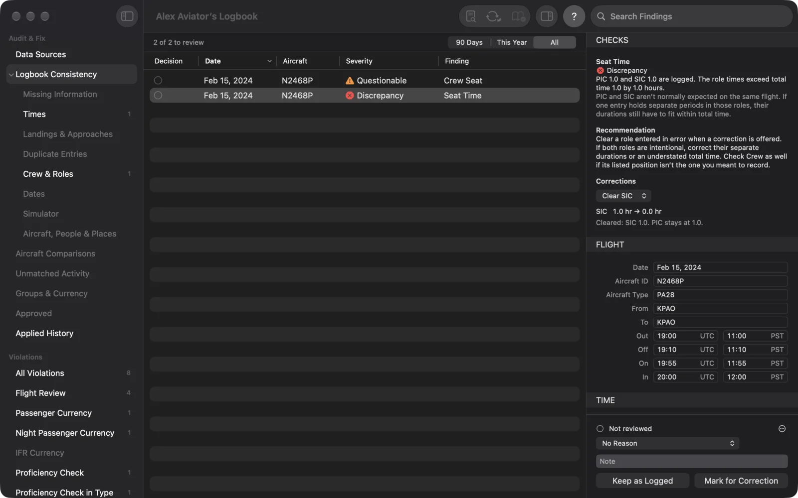

For LogTen Pro on the Mac
Check your logbook against the evidence.
LogTen Assistant audits a LogTen logbook for entries that disagree with each other, with your smart groups, and with what the aircraft recorded. Approve the fixes you trust and it applies them with a backup, a one-flight pilot batch, and verification.
brew install --cask riscfuture/tap/logten-assistant
Requires macOS 27 and LogTen Pro.
| Date | Route | Logged | Recorded |
|---|---|---|---|
| 2026-03-04 | KSJC–KMRY | 0:38 | 0:38 |
| 2026-03-09 | KMRY–KSQL | 1:10 | 0:52 |
| 2026-03-15 | KSQL–KSJC | 0:27 | 0:27 |
Two workflows
Fix what is wrong. Report what is risky.
Audit & Fix
Compares entries with each other, with the logbook’s smart groups, and with FlySto and ADS-B evidence for the aircraft. You review the findings, approve the fixes, back up, and apply them through LogTen’s own import. Every batch is then verified.
- Logbook consistency: times, counts, duplicates, crew, simulators, airports
- Aircraft comparisons: times, night, landings, approaches, airports
- Unmatched activity: flights the logbook never recorded
- Groups & currency: smart groups that don’t match the regulations
Violations
Lists the flights that break the pilot-currency rules of 14 CFR part 61: flight review, passenger and night passenger currency, IFR currency, proficiency checks, NVG, instruction limits and SIC currency. It only reports. Nothing is corrected.
Each rule says what it can’t see, and when a rule can’t run, it tells you which setting lets it.

The safety model
Your logbook is not the app’s to change on a whim.
The app is sandboxed, and applying is deliberately hard to do by accident.
- It reads a copy. The live store is never opened. The app reads snapshots of the logbook, checked for integrity.
- Preflight. Fixes are checked against a fresh snapshot. Locked or signed entries, and entries that changed since the audit, are left out and listed.
- Backup. Applying needs a fresh copy of the logbook folder, with SHA-256 hashes, and your confirmation that you backed up in LogTen too.
- Pilot batch. A one-flight batch goes first, so a problem shows before the rest are sent.
- Verification and revert. Each batch is verified against a new snapshot and journaled with a compensating batch, so Revert Batch can undo it.
- Recording by default. Import packages are written to disk, not sent to LogTen, until you turn sending on and declare that a disposable logbook is open.
Data sources
Evidence from the aircraft.
FlySto
Sync with an API token, or import a FlySto CSV export. You can also upload avionics data logs for FlySto to parse.
ADS-B
Streams adsb.lol’s daily archives and keeps only your aircraft’s traces, under the Open Database License.
FAA data
Downloads the current NASR airport cycle and CIFP approaches, for airports, time zones, night and approach names.